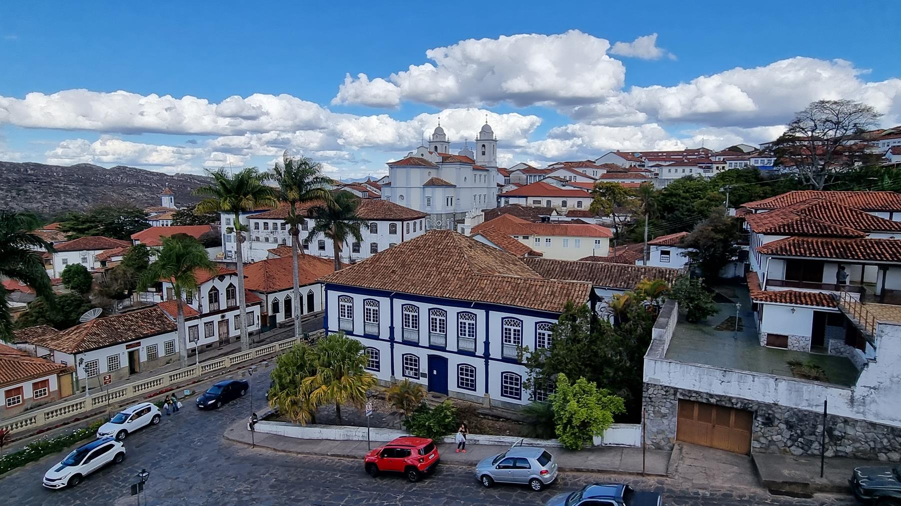
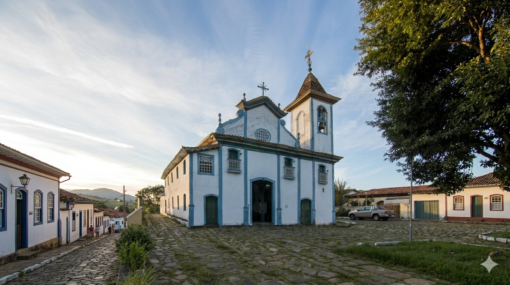
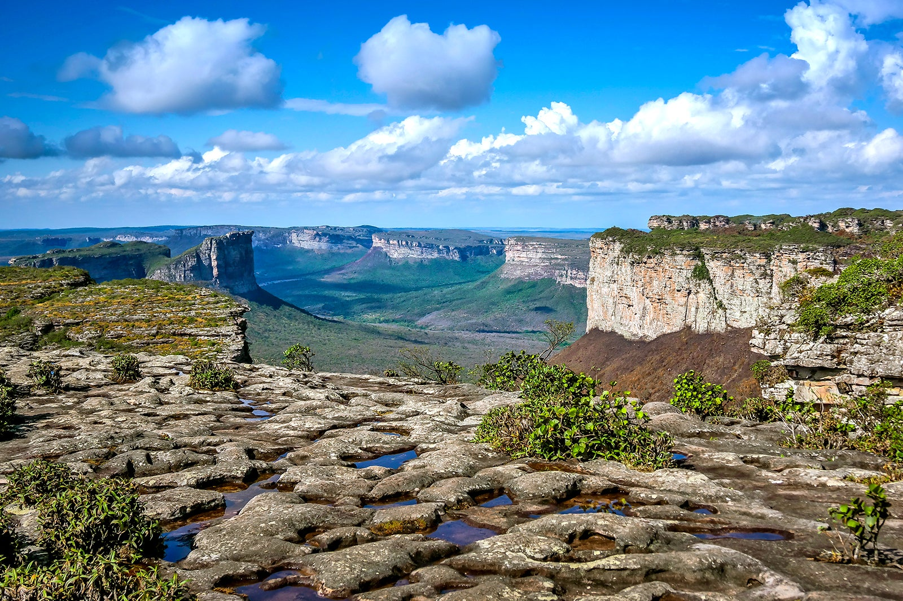

Centro Histórico
Região com ruas de pedra, casarões coloniais e igrejas históricas preservadas desde o período colonial.
História, cultura e tradição em uma das cidades mais encantadoras de Minas Gerais
Diamantina é uma das cidades históricas mais importantes de Minas Gerais, famosa pelo seu patrimônio cultural, arquitetura colonial e forte ligação com o ciclo dos diamantes no Brasil.
A cidade encanta turistas com suas ruas de pedra, casarões históricos, igrejas barrocas, eventos culturais e belas paisagens naturais.

Diamantina surgiu durante o período de exploração dos diamantes no século XVIII e se tornou um importante centro econômico e cultural.
A cidade foi reconhecida como Patrimônio Mundial da UNESCO devido à preservação de sua arquitetura histórica e importância cultural.
Diamantina é a cidade natal de Juscelino Kubitschek, ex-presidente do Brasil e fundador de Brasília.

Região com ruas de pedra, casarões coloniais e igrejas históricas preservadas desde o período colonial.
Museu dedicado à história de JK, um dos personagens mais importantes da política brasileira.
Vila histórica cercada por natureza, trilhas e cachoeiras, muito visitada pelos turistas.
Espaço cultural e gastronômico com música, artesanato e comidas típicas mineiras.
Importante igreja histórica da cidade, conhecida pela arquitetura colonial e tradição religiosa.
Diamantina possui uma das culturas mais ricas de Minas Gerais, marcada pela música, festas populares e tradições históricas.
| Evento | Destaque |
|---|---|
| Vesperata | Apresentação musical nas ruas históricas |
| Semana Santa | Tradições religiosas e culturais |
| Festival de Inverno | Arte, música e cultura |
| Eventos universitários | Vida cultural jovem e estudantil |
Além do turismo histórico, Diamantina também oferece contato com a natureza através de trilhas, cachoeiras e paisagens naturais.

A culinária de Diamantina valoriza pratos típicos mineiros e receitas tradicionais da região.
Os turistas encontram artesanato regional, lembranças históricas, doces e produtos típicos mineiros.
| Informação | Detalhe |
|---|---|
| Estado | Minas Gerais |
| Tipo de turismo | Histórico, cultural e ecológico |
| Principal destaque | Centro histórico e Vesperata |
| Reconhecimento | Patrimônio Mundial da UNESCO |
“Diamantina encanta visitantes com sua história, cultura musical e arquitetura colonial preservada.”